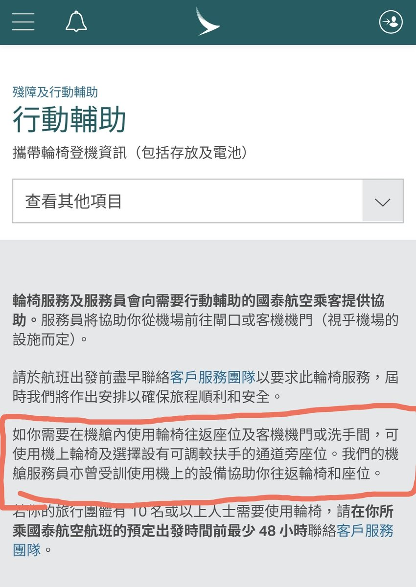

RedFox（2代目）🇲🇴🇭🇰
@FoxRed695449
@AgentKwok 我就說中國人總有一天會把反對LGBT的話術放到殘疾人上
在飛機上使用輪椅應該是一個成熟的航司應有的服務

車尉
@AgentKwok
你是残疾人，机场也安排了地勤协助帮忙，不仅对别人的帮助没有心存感恩，还把别人的一切都当做理所当然。
今天是你腿脚不方便了就要求升悬梯，明天心脏病人胸口闷了要不要开个窗户透气呢。
这世界这机场又不是为你一个人服务的🙄
现在不说风雨中这点痛算什么了😅 https://t.co/x8QoIicbKB